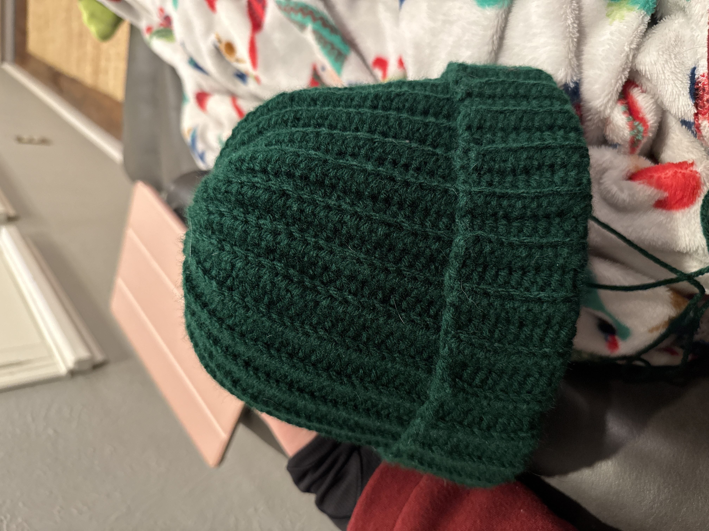
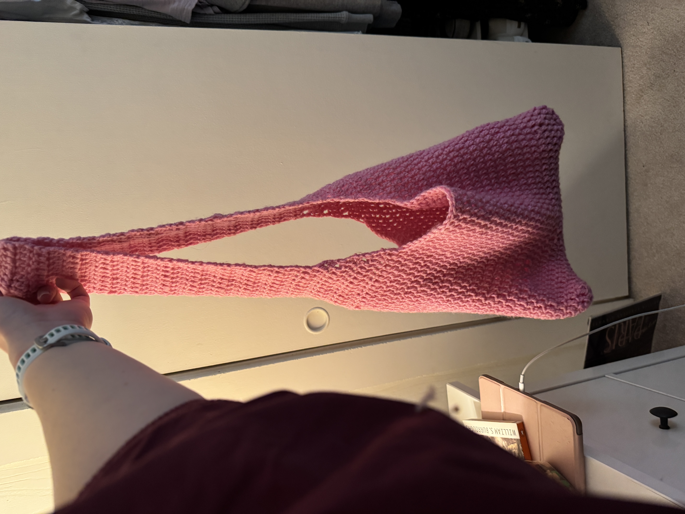
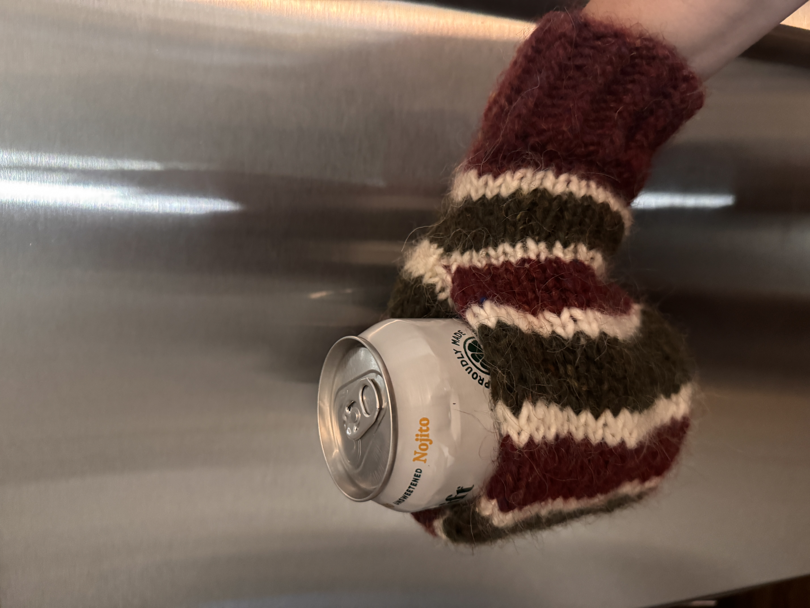

Knitting, Crochet, and Embroidery
Knitting and crocheting allow me to explore structure, pattern, and materials while creating tangible objects. Each project teaches me new things about tension, flexibility, durability, and form, and how minute changes in my technique result in different final outcomes. I am self taught through Youtube and TikTok tutorials, and have loved creating pieces I can wear as part of my day-to-day self expression. Below are a few pieces that highlight my work so far.



← Back to Home